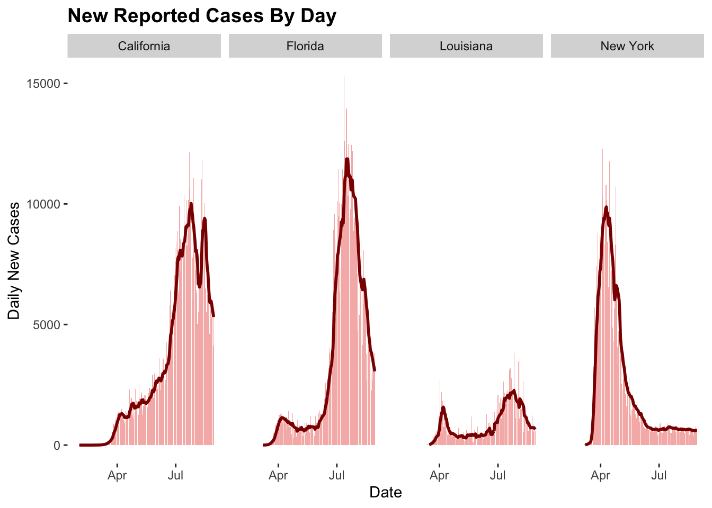
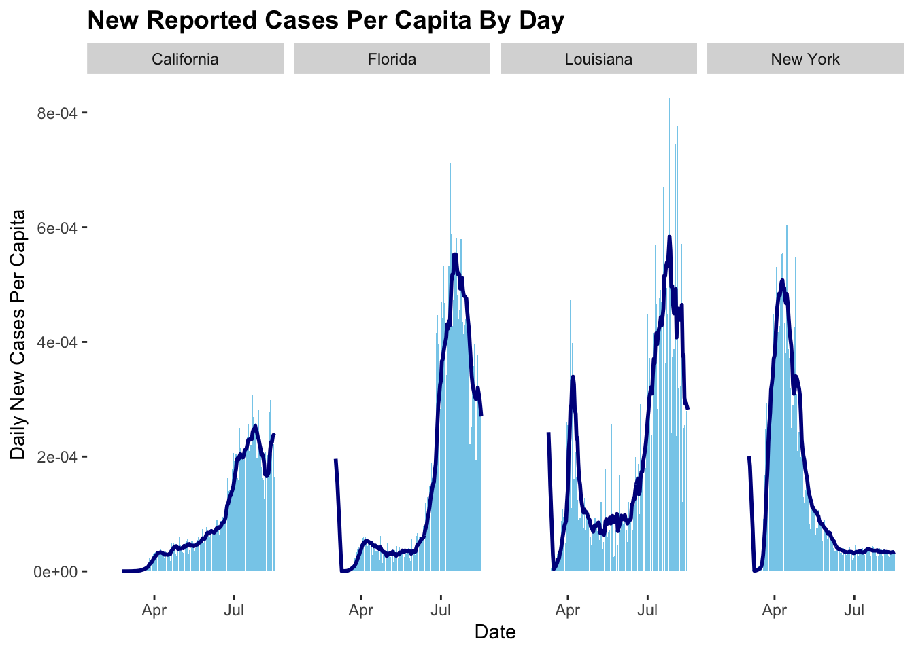

library(dplyr)
library(ggplot2)
library(tidyverse)
library(zoo)
library(knitr)
library(readxl)
url = 'https://raw.githubusercontent.com/nytimes/covid-19-data/master/us-counties.csv'
read_csv(url)## # A tibble: 482,727 x 6
## date county state fips cases deaths
## <date> <chr> <chr> <chr> <dbl> <dbl>
## 1 2020-01-21 Snohomish Washington 53061 1 0
## 2 2020-01-22 Snohomish Washington 53061 1 0
## 3 2020-01-23 Snohomish Washington 53061 1 0
## 4 2020-01-24 Cook Illinois 17031 1 0
## 5 2020-01-24 Snohomish Washington 53061 1 0
## 6 2020-01-25 Orange California 06059 1 0
## 7 2020-01-25 Cook Illinois 17031 1 0
## 8 2020-01-25 Snohomish Washington 53061 1 0
## 9 2020-01-26 Maricopa Arizona 04013 1 0
## 10 2020-01-26 Los Angeles California 06037 1 0
## # … with 482,717 more rowssource = "/Users/xingxin/Github/geog176a-lab2/data/"
covid<-read_csv(url)
head(covid)## # A tibble: 6 x 6
## date county state fips cases deaths
## <date> <chr> <chr> <chr> <dbl> <dbl>
## 1 2020-01-21 Snohomish Washington 53061 1 0
## 2 2020-01-22 Snohomish Washington 53061 1 0
## 3 2020-01-23 Snohomish Washington 53061 1 0
## 4 2020-01-24 Cook Illinois 17031 1 0
## 5 2020-01-24 Snohomish Washington 53061 1 0
## 6 2020-01-25 Orange California 06059 1 0# California, the daily new cases
dat = covid %>%
filter(state == "California") %>%
group_by(county) %>%
mutate(newCases = c(NA, diff(cases))) %>%
ungroup() %>%
filter(date == max(date)) # the 5 counties with the most cumulative cases
most_cum_cases = dat %>%
slice_max(cases, n = 5) %>%
select(county, cases)
knitr::kable(most_cum_cases,
caption = "Most Cumulative Cases California Counties",
col.names = c("County", "cumulative Cases"))| County | cumulative Cases |
|---|---|
| Los Angeles | 239756 |
| Riverside | 51860 |
| Orange | 48190 |
| San Bernardino | 47145 |
| San Diego | 38110 |
# the 5 counties with the most NEW cases
most_new_cases = dat %>%
slice_max(newCases, n = 5) %>%
select(county, newCases)
knitr::kable(most_new_cases,
caption = "Most New Cases California Counties",
col.names = c("County", "New Cases"))| County | New Cases |
|---|---|
| Los Angeles | 1298 |
| Orange | 408 |
| San Diego | 263 |
| San Bernardino | 253 |
| Fresno | 245 |
# import population data
PopulationEstimates <- read_excel(paste(source,"PopulationEstimates.xls",sep = ""),
skip = 2)
population_2019 = PopulationEstimates %>%
select(FIPStxt,POP_ESTIMATE_2019)
# join the population data to the California COVID data.
dat2 <-inner_join(dat, population_2019, by = c("fips" = "FIPStxt"))# the 5 counties with the most cumulative cases per capita
most_cum_cases_pc = dat2 %>%
mutate(Cases_pc = cases/POP_ESTIMATE_2019) %>%
slice_max(Cases_pc, n = 5) %>%
select(county, Cases_pc)
knitr::kable(most_cum_cases_pc,
caption = "Most Cumulative Cases California Counties Per Capita",
col.names = c("County", "cumulative Cases Per Capita"))| County | cumulative Cases Per Capita |
|---|---|
| Imperial | 0.0588638 |
| Kings | 0.0401595 |
| Kern | 0.0323316 |
| Tulare | 0.0297815 |
| Merced | 0.0284140 |
# the 5 counties with the most NEW cases per capita
most_new_cases_pc = dat2 %>%
mutate(newCases_pc = newCases/POP_ESTIMATE_2019) %>%
slice_max(newCases_pc, n = 5) %>%
select(county, newCases_pc)
knitr::kable(most_new_cases_pc,
caption = "Most New Cases California Counties Per Capit",
col.names = c("County", "New Cases Per Capit"))| County | New Cases Per Capit |
|---|---|
| San Benito | 0.0006209 |
| Stanislaus | 0.0004086 |
| Kings | 0.0002550 |
| Fresno | 0.0002452 |
| Marin | 0.0001932 |
# 14-days
per_cap = covid %>%
filter(state == "California") %>%
group_by(county) %>%
mutate(newCases = c(NA, diff(cases))) %>%
ungroup() %>%
filter(date >= max(date)-13) %>%
inner_join(population_2019, by = c("fips" = "FIPStxt"))
#Calculate Safe counties
dat_14 = per_cap %>%
group_by(county,POP_ESTIMATE_2019) %>%
summarize(tot_newCases = sum(newCases, na.rm = TRUE),tot_cumCases = sum(cases, na.rm = TRUE)) %>%
ungroup() %>%
mutate(tot_safe_county = tot_newCases/(POP_ESTIMATE_2019/100000)) %>%
filter(tot_safe_county < 100)the total number of cases: 7.0249910^{5}
the total number of new cases: 4110
the total number of the total number of safe counties : 18
# Question 2
# facet plot of the daily new cases and the 7-day rolling mean
# select four states
four_states <- covid %>%
filter(state %in% c("New York","California", "Louisiana", "Florida")) %>%
group_by(state, date) %>%
summarize(cases = sum(cases)) %>%
ungroup() %>%
group_by(state) %>%
mutate(newCases = cases - lag(cases),
roll7 = rollmean(newCases, 7, fill = NA, align = 'right')) %>%
ungroup() %>%
filter(newCases > 0)
ggplot(data = four_states,aes(x = date)) +
geom_col(aes(y = newCases), col = NA, fill = "#F5B8B5") +
geom_line(aes(y = roll7), col = "darkred", size = 1) +
labs(x = "Date", y = "Daily New Cases",
title = "New Reported Cases By Day ") +
theme(plot.background = element_rect(fill = "white"),
panel.background = element_rect(fill = "white"),
plot.title = element_text(size = 14, face = 'bold')) +
facet_grid(~state, scales = "free_y")
# import population data
PopulationEstimates <- read_excel(paste(source,"PopulationEstimates.xls",sep = ""),
skip = 2)
population_2019 = PopulationEstimates %>%
select(Area_Name,POP_ESTIMATE_2019) # facet plot of the daily new cases and the 7-day rolling mean
# select four states per capita
four_states_pc <- population_2019 %>%
right_join(four_states, by = c("Area_Name" = "state")) %>%
mutate(newCases_pc = (newCases/POP_ESTIMATE_2019),
roll7 = rollmean(newCases_pc, 7, fill = NA, align = 'right')) %>%
ungroup() %>%
filter(newCases_pc > 0)
ggplot(data = four_states_pc,aes(x = date)) +
geom_col(aes(y = newCases_pc), col = NA, fill = "skyblue") +
geom_line(aes(y = roll7), col = "darkblue", size = 1) +
labs(x = "Date", y = "Daily New Cases Per Capita",
title = "New Reported Cases Per Capita By Day ") +
theme(plot.background = element_rect(fill = "white"),
panel.background = element_rect(fill = "white"),
plot.title = element_text(size = 14, face = 'bold')) +
facet_grid(~Area_Name, scales = "free_y") 
The absolute value of new cases in Louisiana is much lower than the other three states. However, the new cases per capita in Louisiana is close to the other states. The possible reason is that Louisiana has a much smaller populaition compared with other states.